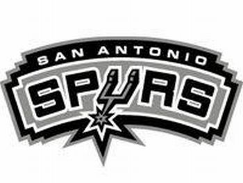

Experience
Leonard played two seasons of college basketball for San Diego State University before being selected with the 15th overall pick in the 2011 NBA draft by the Indiana Pacers before being traded to San Antonio.

Leonard won an NBA championship with the Spurs in 2014 and was named the NBA Finals Most Valuable Player. He is a two-time NBA Defensive Player of the Year, having won in 2015 and 2016.